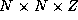

![[DBPP]](pictures//asm_color_tiny.gif)


![[Search]](pictures//search_motif.gif)
Next: Chapter Notes
Up: 3 A Quantitative Basis for Design
Previous: 3.10 Summary
The exercises in this chapter are designed to provide experience in
the development and use of performance models. When an exercise asks
you to implement an algorithm, you should use one of the programming
tools described in Part II.
-
Discuss the relative importance of the various performance metrics
listed in Section 3.1 when designing a parallel
floorplan optimization program for use in VLSI design.
-
Discuss the relative importance of the various performance metrics
listed in Section 3.1 when designing a video server that
uses a parallel computer to generate many hundreds of thousands of
concurrent video streams. Each stream must be retrieved from disk,
decoded, and output over a network.
-
The self-consistent field (SCF) method in computational chemistry
involves two operations: Fock matrix construction and matrix
diagonalization. Assuming that diagonalization accounts for 0.5 per
cent of total execution time on a uniprocessor computer, use Amdahl's
law to determine the maximum speedup that can be obtained if only the
Fock matrix construction operation is parallelized.
-
You are charged with designing a parallel SCF program. You estimate
your Fock matrix construction algorithm to be 90 percent efficient on
your target computer. You must choose between two parallel
diagonalization algorithms, which on five hundred processors achieve
speedups of 50 and 10, respectively. What overall efficiency do you
expect to achieve with these two algorithms? If your time is as
valuable as the computer's, and you expect the more efficient
algorithm to take one hundred hours longer to program, for how many
hours must you plan to use the parallel program if the more efficient
algorithm is to be worthwhile?
-
Some people argue that in the future, processors will become
essentially free as the cost of computers become dominated by the
cost of storage and communication networks. Discuss how this
situation may affect algorithm design and performance analysis.
-
Generate an execution profile similar to that in Figure 3.8 for
an implementation of a parallel finite difference algorithm based on a
2-D decomposition. Under which circumstances will message startups
contribute more to execution time than will data transfer costs?
-
Derive expressions that indicate when a 2-D decomposition of a finite
difference computation on an  grid will be superior
to a 1-D decomposition and when a 3-D decomposition will be superior
to a 2-D decomposition. Are these conditions likely to apply in
practice? Let
 sec, sec,
sec, sec,  sec, and
P=1000
. For what values of N
does the use of a 3-D
decomposition rather than a 2-D decomposition reduce execution time by
more than 10 percent?
sec, and
P=1000
. For what values of N
does the use of a 3-D
decomposition rather than a 2-D decomposition reduce execution time by
more than 10 percent?
-
Adapt the analysis of Example 3.4 to consider 1-D and
2-D decompositions of a 2-D grid. Let
N=1024
, and fix other parameters as in Exercise 7. For
what values of P
does the use of a 2-D decomposition rather than
a 1-D decomposition reduce execution time by more than 10 percent?
-
Implement a simple ``ping-pong'' program that bounces messages between
a pair of processors. Measure performance as a function of message
size on a workstation network and on one or more parallel computers.
Fit your results to Equation 3.1 to obtain values for
 and
and  . Discuss the quality of your results and of the fit.
. Discuss the quality of your results and of the fit.
-
Develop a performance model for the program constructed in
Exercise 5 in Chapter 2 that gives execution
time as a function of N
, P
,
 ,
,  , and
, and  .
Perform empirical studies to determine values for
.
Perform empirical studies to determine values for  ,
,  , and
, and
 on different parallel computer systems. Use the results of
these studies to evaluate the adequacy of your model.
on different parallel computer systems. Use the results of
these studies to evaluate the adequacy of your model.
-
Develop performance models for the parallel algorithms developed in
Exercise 10 in Chapter 2. Compare these models
with performance data obtained from implementations of these
algorithms.
-
Determine the isoefficiency function for the program developed in
Exercise 10. Verify this experimentally.
-
Use the ``ping-pong'' program of Exercise 9 to study
the impact of bandwidth limitations on performance, by writing a
program in which several pairs of processors perform exchanges
concurrently. Measure execution times on a workstation network and on
one or more parallel computers. Relate observed performance to
Equation 3.10.
-
Implement the parallel summation algorithm of Section 2.4.1.
Measure execution times as a function of problem size on a network of
workstations and on one or more parallel computers. Relate observed
performance to the performance models developed in this chapter.
-
Determine the isoefficiency function for the butterfly summation
algorithm of Section 2.4.1, with and without bandwidth
limitations.
-
Design a communication structure for the algorithm Floyd 2 discussed
in Section 3.9.1.
-
Assume that a cyclic mapping is used in the atmosphere model of
Section 2.6 to compensate for load imbalances. Develop an
analytic expression for the additional communication cost associated
with various block sizes and hence for the load imbalance that must
exist for this approach to be worthwhile.
-
Implement a two-dimensional finite difference algorithm using a nine-point
stencil. Use this program to verify experimentally the analysis of
Exercise 17. Simulate load imbalance by calling a ``work''
function that performs different amounts of computation at different
grid points.
-
Assume that , , and sec. Use the
performance models summarized in Table 3.7 to determine
the values of N
and P
for which the various shortest-path
algorithms of Section 3.9 are optimal.
-
Assume that a graph represented by an adjacency matrix of size
 is distributed among P
tasks prior to the execution of the
all-pairs shortest-path algorithm. Repeat the analysis of
Exercise 19 but allow for the cost of data replication
in the Dijkstra algorithms.
is distributed among P
tasks prior to the execution of the
all-pairs shortest-path algorithm. Repeat the analysis of
Exercise 19 but allow for the cost of data replication
in the Dijkstra algorithms.
-
Extend the performance models developed for the shortest-path
algorithms to take into account bandwidth limitations on a 1-D mesh
architecture.
-
Implement algorithms Floyd 1 and Floyd 2, and compare their
performance with that predicted by Equations 3.12
and 3.13. Account for any differences.
-
In so-called nondirect Fock matrix construction algorithms, the
integrals of Equation 2.3 are cached on disk and reused at
each step. Discuss the performance issues that may arise when
developing a code of this sort.
-
The bisection width
of a computer is the minimum number of
wires that must be cut to divide the computer into two equal parts.
Multiplying this by the channel bandwidth gives the bisection
bandwidth. For example, the bisection bandwidth of a 1-D mesh with
bidirectional connections is 2/
 . Determine the bisection
bandwidth of a bus, 2-D mesh, 3-D mesh, and hypercube.
. Determine the bisection
bandwidth of a bus, 2-D mesh, 3-D mesh, and hypercube.
Figure 3.29: Parallel matrix transpose of a matrix A
decomposed
by column, with P=4
. The components of the matrix allocated to
a single task are shaded black, and the components required from other
tasks are stippled.
-
An array transpose operation reorganizes an array partitioned in one
dimension so that it is partitioned in the second dimension
(Figure 3.29). This can be achieved in
P-1
steps, with each processor exchanging of its data with another
processor in each step. Develop a performance model for this
operation.
-
Equation 3.1 can be extended to account for the distance
D
between originating and destination processors:
The time per hop typically has magnitude comparable to  .
Under what circumstances might the
.
Under what circumstances might the  term be significant?
term be significant?
-
Develop a performance model for the matrix transpose algorithm on a
1-D mesh that takes into account per-hop costs, as specified by
Equation 3.14. Assume that and , and
identify P
and N
values for which per-hop costs make a
significant ( >5
percent) difference to execution time.
-
Demonstrate that the transpose algorithm's messages travel a total of
hops on a 1-D mesh. Use this information to refine the
performance model of Exercise 25 to account for
competition for bandwidth.
-
In the array transpose algorithm of Exercise 25, roughly
half of the array must be moved from one half of the computer to the
other. Hence, we can obtain a lower time bound by dividing the data
volume by the bisection bandwidth. Compare this bound with times
predicted by simple and bandwidth-limited performance models, on a
bus, one-dimensional mesh, and two-dimensional mesh.
-
Implement the array transpose algorithm and study its performance.
Compare your results to the performance models developed in preceding
exercises.
Next: Chapter Notes
Up: 3 A Quantitative Basis for Design
Previous: 3.10 Summary
© Copyright 1995 by Ian Foster